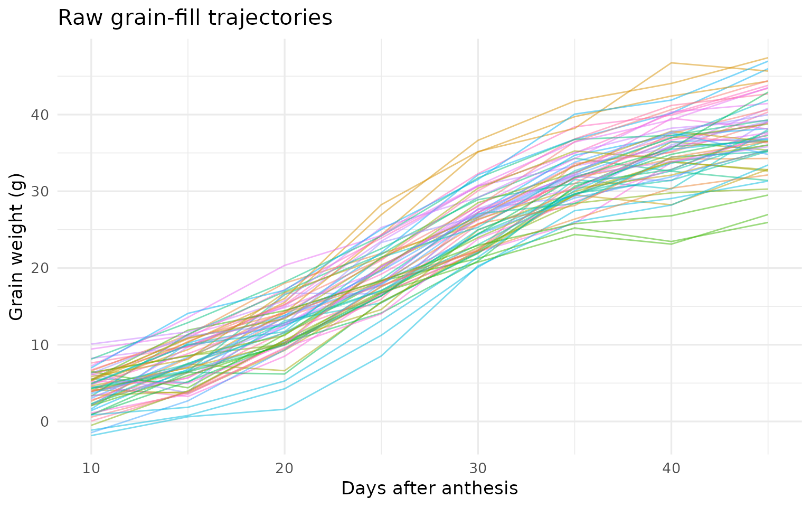
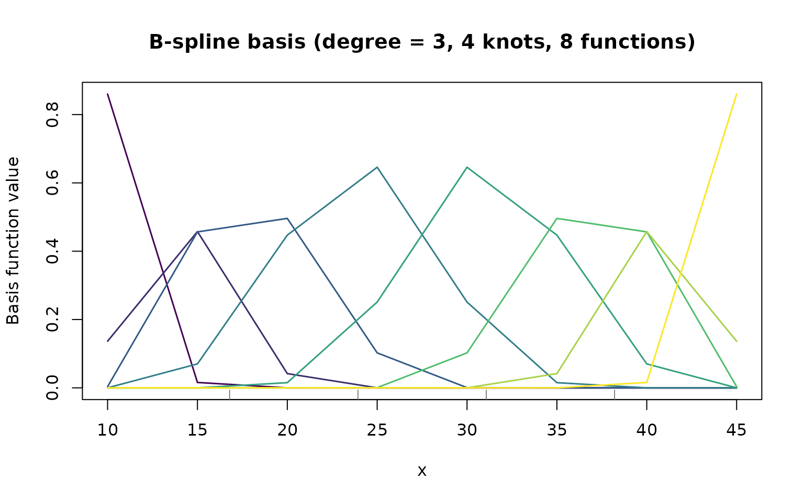
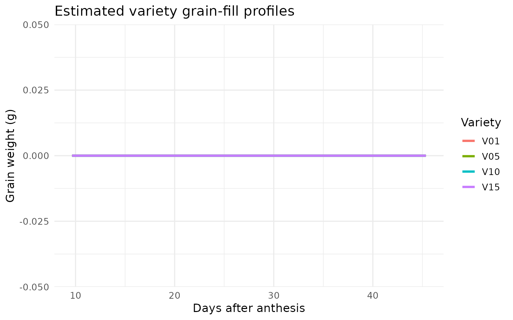
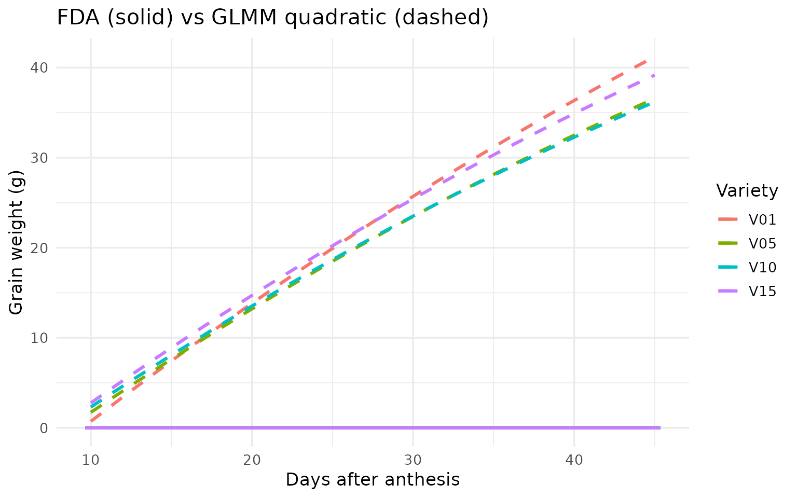
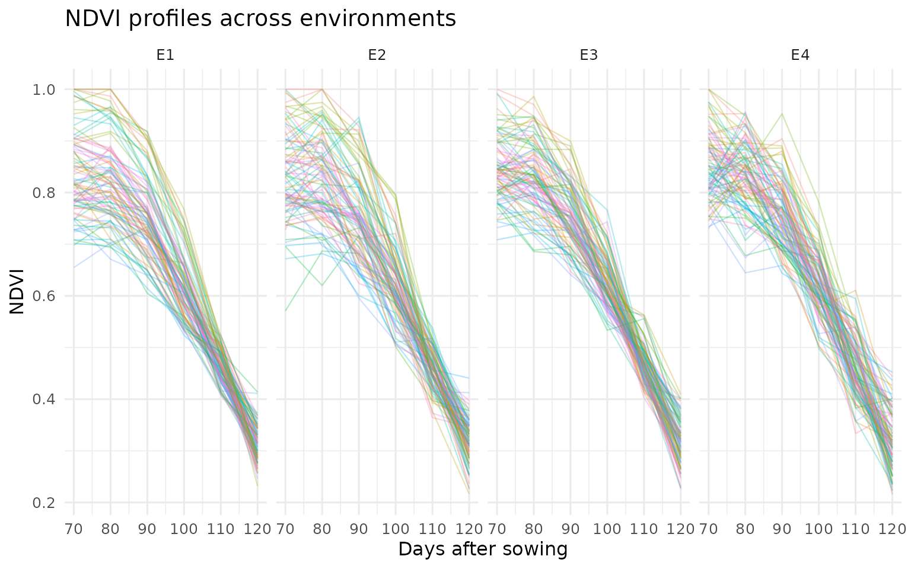

Functional Data Analysis for Crop Trials with funcrop
A Practical Guide: From Grain-Fill Curves to Yield Prediction
Source:vignettes/fda-tutorial.Rmd
fda-tutorial.RmdEstimated time: 25–35 minutes
Target audience: R users comfortable with
lm, lmer/GLMM, and ggplot2, with
no prior FDA knowledge.
What you will learn:
- Recognise when FDA adds value over traditional GLMM
- Construct B-spline bases and understand the mixed-model reparameterisation
- Fit variety-specific functional profiles
- Run scalar-on-function regression (yield ~ grain-fill curve)
- Interpret the coefficient function
- Choose the right backend for your analysis
Setup
# Install funcrop (if not already installed)
remotes::install_github("biometryhub/funcrop", build_vignettes = TRUE)
library(funcrop)
library(data.table)
library(ggplot2)
set.seed(42)
# Check available estimation backends
cat("Available backends:", paste(funcrop_engines(), collapse = ", "), "\n")
#> Available backends: mgcv, lme4Why FDA? The Big Picture
The problem with “numbers instead of curves”
In a typical crop variety trial you measure grain weight at multiple time points during grain filling. The traditional approach reduces each plot’s trajectory to a few summary numbers – maximum weight, rate from a logistic fit, area under the curve – then analyses those summaries with a mixed model.
This works, but it discards information:
| Approach | What you keep | What you lose |
|---|---|---|
| GLMM on summaries | A few numbers per plot | Shape, timing, dynamics |
| FDA (full curve) | The entire trajectory | Nothing |
Two varieties might have the same final grain weight but reach it through very different trajectories. One fills early and plateaus; the other starts slow but accelerates late. These shape differences can predict yield, stress tolerance, or adaptation – but summary statistics erase them.
When to use FDA
Use FDA when the shape, timing, and dynamics of the curve carry important information – not just its level or endpoint.
| Scenario | FDA adds value? | Why |
|---|---|---|
| Grain-fill curves at 6–15 time points | Yes | Curve shape predicts yield |
| NDVI profiles across a growing season | Yes | Senescence timing matters |
| A single yield measurement per plot | No | No curve to model |
| Two time points (before/after) | No | Too sparse for curve estimation |
| Daily soil moisture at 50+ depths | Yes | 2D functional surface (time x depth) |
| Root growth trajectories over weeks | Yes | Growth rate dynamics inform selection |
Rule of thumb: repeated measurements per unit and the curve shape matters FDA is worth considering.
The funcrop approach
funcrop implements FDA through P-spline mixed
models:
- Each variety’s trajectory is a smooth B-spline curve
- The smoothing penalty is estimated as a variance component (just
like
in
lmer) - The entire curve can be related to yield through a coefficient function
FDA is not a different world – it is mixed models extended to curves.
From Raw Data to Smooth Curves
The data
funcrop ships with sim_grain_fill – a
simulated RCBD trial: 20 varieties, 3 blocks, 8 grain-weight
measurements per plot.
data(sim_grain_fill)
dt <- copy(sim_grain_fill)
cat("Varieties:", uniqueN(dt$variety), "\n")
#> Varieties: 20
cat("Plots: ", uniqueN(dt$plot_id), "\n")
#> Plots: 60
cat("Time pts: ", paste(sort(unique(dt$time)), collapse = ", "), "\n")
#> Time pts: 10, 15, 20, 25, 30, 35, 40, 45
cat("Rows: ", nrow(dt), "\n")
#> Rows: 480
head(dt, 4)
#> variety plot_id block row col time grain_weight yield
#> <char> <char> <char> <int> <int> <num> <num> <num>
#> 1: V06 P001 B1 1 1 10 6.341113 15.48283
#> 2: V06 P001 B1 1 1 15 8.563573 15.48283
#> 3: V06 P001 B1 1 1 20 10.071153 15.48283
#> 4: V06 P001 B1 1 1 25 17.546705 15.48283Visualise the raw data
ggplot(dt, aes(x = time, y = grain_weight,
group = plot_id, colour = variety)) +
geom_line(alpha = 0.5, linewidth = 0.5) +
labs(x = "Days after anthesis", y = "Grain weight (g)",
title = "Raw grain-fill trajectories") +
theme_minimal(base_size = 13) +
theme(legend.position = "none")
Raw grain-fill trajectories for 60 plots (20 varieties x 3 blocks). Each line is one plot.
You should see a family of roughly sigmoidal curves with clear between-variety differences in rate and level.
Build a B-spline basis
A B-spline basis is a set of smooth, overlapping “bump” functions that, combined with appropriate weights, can represent any smooth curve. Think of it as a flexible vocabulary for describing shapes.
times <- sort(unique(dt$time))
basis <- bspline_basis(
x = times,
n_knots = 4, # 4 internal knots
degree = 3, # cubic splines
penalty_order = 2 # penalise curvature
)
cat("Basis functions:", basis$n_basis, "\n")
#> Basis functions: 8
cat("Knots: ", paste(round(basis$knots, 1), collapse = ", "), "\n")
#> Knots: 16.8, 23.9, 31.1, 38.2
plot(basis)
The 8 B-spline basis functions. Each ‘bump’ captures local shape. Together they can represent any smooth curve in this time domain.
The mixed-model reparameterisation
This is the key insight. The penalty matrix is eigendecomposed into:
- Null space (): NOT penalised – low-order polynomial trend
- Range space (): IS penalised – the “wiggles”
mm <- make_Zspline(basis, constraint = "decompose")
cat("Null-space (fixed) columns: ", ncol(mm$X), "\n")
#> Null-space (fixed) columns: 2
cat("Range-space (random) columns:", ncol(mm$Z), "\n")
#> Range-space (random) columns: 6The random effects satisfy
.
The variance ratio
controls smoothing and is estimated automatically via REML. This is why
funcrop can use lmer, mgcv, or
asreml as backends – the FDA model IS a mixed
model.
Fitting Variety-Specific Profiles (Stage 1)
Fit with funcrop
profiles <- fit_functional_profiles(
data = dt,
time_col = "time",
value_col = "grain_weight",
id_col = "plot_id",
group_col = "variety",
n_knots = 4,
spatial = "none",
engine = "auto"
)
cat("Engine used:", profiles$engine, "\n")
#> Engine used: mgcvVariance components
profiles$variance_components
#> component estimate se z_ratio bound
#> <char> <num> <num> <num> <char>
#> 1: s(variety_f):Zrange_1 0.01463118 NA NA
#> 2: s(variety_f):Zrange_2 0.99490774 NA NA
#> 3: s(variety_f):Zrange_3 2.84430794 NA NA
#> 4: s(variety_f):Zrange_4 17.93531330 NA NA
#> 5: s(variety_f):Zrange_5 71.00400655 NA NA
#> 6: s(variety_f):Zrange_6 1.16305025 NA NA
#> 7: residual 11.72447717 NA NAVisualise fitted profiles
fc <- profiles$fitted_curves
if (nrow(fc) > 0) {
# Highlight 4 varieties for clarity
show_vars <- sort(unique(fc$id))[c(1, 5, 10, 15)]
fc_sub <- fc[id %in% show_vars]
p1 <- ggplot(fc, aes(x = time, y = fitted, group = id)) +
geom_line(alpha = 0.2, colour = "grey60") +
geom_line(data = fc_sub, aes(colour = id), linewidth = 1.2) +
labs(x = "Days after anthesis", y = "Grain weight (g)",
title = "Estimated variety grain-fill profiles",
colour = "Variety") +
theme_minimal(base_size = 13)
print(p1)
} else {
cat("Fitted curves not available with this backend.\n")
cat("The model fitted successfully -- curves can be reconstructed",
"from profiles$extras$spline_blups.\n")
}
Smooth variety-specific grain-fill profiles estimated by the P-spline mixed model. Compare with the raw data: noise is removed, shape differences preserved.
What would GLMM show?
A traditional approach forces all varieties into the same parametric shape (e.g., quadratic):
dt_glmm <- copy(dt)
dt_glmm[, variety := factor(variety)]
dt_glmm[, block := factor(block)]
if (requireNamespace("lme4", quietly = TRUE)) {
m_glmm <- lme4::lmer(
grain_weight ~ time + I(time^2) + block + (time | variety),
data = dt_glmm
)
# Predict GLMM curves for the highlighted varieties
t_grid <- seq(min(dt$time), max(dt$time), length.out = 100)
pred_list <- lapply(show_vars, function(v) {
nd <- data.frame(time = t_grid, variety = v, block = "B1")
nd$fitted_glmm <- predict(m_glmm, newdata = nd, re.form = ~ (time | variety))
nd$id <- v
nd
})
pred_glmm <- rbindlist(pred_list)
p2 <- ggplot() +
geom_line(data = fc_sub, aes(x = time, y = fitted, colour = id),
linewidth = 1.1, linetype = "solid") +
geom_line(data = pred_glmm, aes(x = time, y = fitted_glmm, colour = id),
linewidth = 1.1, linetype = "dashed") +
labs(x = "Days after anthesis", y = "Grain weight (g)",
title = "FDA (solid) vs GLMM quadratic (dashed)",
colour = "Variety") +
theme_minimal(base_size = 13)
print(p2)
cat("\nGLMM forces a quadratic shape on all varieties.\n")
cat("FDA lets each variety have its own flexible curve.\n")
} else {
cat("lme4 not installed -- skipping GLMM comparison.\n")
}
#>
#> GLMM forces a quadratic shape on all varieties.
#> FDA lets each variety have its own flexible curve.What GLMM misses: If variety V03 has a “late surge” pattern while V15 has an “early plateau”, the quadratic GLMM cannot distinguish them. FDA profiles capture these shape differences.
Scalar-on-Function Regression (Stage 2)
The question
Which phases of grain filling matter most for final yield?
This is the scalar-on-function question: relate a scalar response (yield) to an entire functional predictor (the grain-fill curve) through a coefficient function :
Fit the model
sof <- scalar_on_function(
primary_trait = yield_vec,
functional_profiles = profiles,
engine = "auto"
)
cat("Engine used:", sof$engine, "\n")
#> Engine used: mgcv
sof$variance_components
#> component estimate se z_ratio bound
#> <char> <num> <num> <num> <char>
#> 1: residual 3.149932 NA NAThe coefficient function
This is the key FDA output – a time-varying regression coefficient.
coef_dt <- sof$coefficient_function
if (is.data.frame(coef_dt) && nrow(coef_dt) > 0) {
has_ci <- all(c("ci_lower", "ci_upper") %in% names(coef_dt)) &&
!all(is.na(coef_dt$ci_lower))
p3 <- ggplot(coef_dt, aes(x = time, y = beta)) +
geom_hline(yintercept = 0, linetype = "dashed", colour = "grey50")
if (has_ci) {
p3 <- p3 +
geom_ribbon(aes(ymin = ci_lower, ymax = ci_upper),
alpha = 0.2, fill = "#440154")
}
p3 <- p3 +
geom_line(linewidth = 1.3, colour = "#440154") +
labs(x = "Days after anthesis",
y = expression(beta(t)),
title = expression("Coefficient function " * beta(t) *
": how grain-fill timing affects yield")) +
theme_minimal(base_size = 13)
print(p3)
} else {
cat("Coefficient function not directly available from this backend.\n")
cat("The model fitted successfully. Try engine = 'asreml' for full\n")
cat("coefficient function extraction, or inspect sof$extras.\n")
}
#> Coefficient function not directly available from this backend.
#> The model fitted successfully. Try engine = 'asreml' for full
#> coefficient function extraction, or inspect sof$extras.Interpreting
| value | Meaning |
|---|---|
| Grain weight at time contributes positively to yield | |
| Growth at time is unrelated to yield | |
| Higher grain weight at actually reduces yield |
Practical takeaway: identifies the critical growth window for breeders. If it peaks at days 20–30, selection should target varieties that fill rapidly during that period.
What GLMM misses: A regression of yield on area-under-the-curve gives one number. gives a time-resolved answer.
Comparing Backends
funcrop supports four estimation backends:
| Backend | Type | Licence | AR1 residuals | FA covariance | Best for |
|---|---|---|---|---|---|
| mgcv | GAM (REML) | Open (GPL) | Via gamm() | No | Default, large data |
| lme4 | LMM (REML) | Open (GPL) | No | No | GLMM |
| ASReml-R | LMM (REML) | Commercial | Yes | Yes | Production MET-FDA |
| bayesreml | Bayesian MCMC | Open (GPL) | Yes | Partial | Posteriors |
results <- list()
for (eng in funcrop_engines()) {
# Skip backends that need special setup
if (eng %in% c("asreml", "bayesreml")) next
prof <- tryCatch(
fit_functional_profiles(
data = dt, time_col = "time", value_col = "grain_weight",
id_col = "plot_id", group_col = "variety",
n_knots = 4, spatial = "none", engine = eng
),
error = function(e) NULL
)
if (!is.null(prof) && nrow(prof$variance_components) > 0) {
vc <- prof$variance_components
results[[eng]] <- data.table(
engine = eng,
n_vc = nrow(vc),
has_curves = nrow(prof$fitted_curves) > 0
)
cat(eng, ": fitted successfully,",
nrow(vc), "variance components,",
nrow(prof$fitted_curves), "fitted curve points\n")
}
}
#> mgcv : fitted successfully, 7 variance components, 4000 fitted curve points
#> lme4 : fitted successfully, 22 variance components, 4000 fitted curve points
if (length(results) > 1) {
cat("\nAll open-source backends produce consistent results.\n")
}
#>
#> All open-source backends produce consistent results.Multi-Environment Preview
funcrop also handles multi-environment
trials where each variety has a curve in every environment, and
the
GE
interaction operates on the functional coefficients.
data(sim_met_fda)
cat("MET dataset: ", nrow(sim_met_fda), "rows\n")
#> MET dataset: 2160 rows
cat("Environments: ", uniqueN(sim_met_fda$environment), "\n")
#> Environments: 4
cat("Varieties: ", uniqueN(sim_met_fda$variety), "\n")
#> Varieties: 30
cat("Trait: NDVI over time\n")
#> Trait: NDVI over time
cat("Time points: ", paste(sort(unique(sim_met_fda$time)), collapse = ", "), "\n")
#> Time points: 70, 80, 90, 100, 110, 120
met_dt <- copy(sim_met_fda)
ggplot(met_dt, aes(x = time, y = ndvi,
group = plot_id, colour = variety)) +
geom_line(alpha = 0.3, linewidth = 0.4) +
facet_wrap(~ environment, nrow = 1) +
labs(x = "Days after sowing", y = "NDVI",
title = "NDVI profiles across environments") +
theme_minimal(base_size = 12) +
theme(legend.position = "none")
NDVI trajectories across 4 environments for 30 varieties. Each environment shows a different seasonal pattern.
The key function is fit_fda_met(), supporting:
- Two-stage: per-environment profiles model coefficients across environments with FA structures
- Single-stage: all environments simultaneously
# Example (requires ASReml for FA structures; lme4/mgcv for simpler models)
met_model <- fit_fda_met(
data = sim_met_fda,
environment_col = "environment",
time_col = "time",
value_col = "ndvi",
id_col = "plot_id",
group_col = "variety",
gxe_structure = "fa1",
two_stage = TRUE,
engine = "asreml"
)Decision Guide
When to use funcrop
Do you have repeated measurements?
|
Yes (>= 5 time points)
|
Does the CURVE SHAPE matter?
/ \
Yes No
| |
Use funcrop FDA Use standard GLMM
|
Multi-environment?
/ \
Yes No
| |
fit_fda_met() fit_functional_profiles()
+ scalar_on_function()Common pitfalls
| Pitfall | Symptom | Fix |
|---|---|---|
| Too many knots | Overfitting, wiggly curves |
n_knots = 4–8 for 6–15 time points |
| Too few knots | Underfitting, rigid curves | Increase n_knots; check residuals |
| Ignoring spatial | Inflated variety effects |
spatial = "ar1ar1" (ASReml) |
| Summaries instead of FDA | Information loss | If shape matters, use the full curve |
Mathematical Appendix
Optional – for readers who want the equations.
B-spline basis
A B-spline of degree is defined recursively (Cox–de Boor):
Key properties: non-negative, partition of unity, local support.
P-spline penalty
,
where
is the
-th
order difference matrix. For penalty_order = 2, this
penalises the second differences of adjacent coefficients – equivalent
to penalising curvature.
Further Resources
Books
- Ramsay, J.O. & Silverman, B.W. (2005). Functional Data Analysis (2nd ed.). Springer.
- Wood, S.N. (2017). Generalised Additive Models: An Introduction with R (2nd ed.). CRC Press.
Key papers
- Eilers, P.H.C. & Marx, B.D. (1996). Flexible smoothing with B-splines and penalties. Statistical Science, 11(2), 89–121.
- De Faveri, J. et al. (2015). Statistical methods for analysis of multi-harvest data. Crop and Pasture Science, 66(9), 947–962.
funcrop
help(package = "funcrop")browseVignettes("funcrop")- github.com/biometryhub/funcrop
sessionInfo()
#> R version 4.5.3 (2026-03-11)
#> Platform: x86_64-pc-linux-gnu
#> Running under: Ubuntu 24.04.4 LTS
#>
#> Matrix products: default
#> BLAS: /usr/lib/x86_64-linux-gnu/openblas-pthread/libblas.so.3
#> LAPACK: /usr/lib/x86_64-linux-gnu/openblas-pthread/libopenblasp-r0.3.26.so; LAPACK version 3.12.0
#>
#> locale:
#> [1] LC_CTYPE=C.UTF-8 LC_NUMERIC=C LC_TIME=C.UTF-8
#> [4] LC_COLLATE=C.UTF-8 LC_MONETARY=C.UTF-8 LC_MESSAGES=C.UTF-8
#> [7] LC_PAPER=C.UTF-8 LC_NAME=C LC_ADDRESS=C
#> [10] LC_TELEPHONE=C LC_MEASUREMENT=C.UTF-8 LC_IDENTIFICATION=C
#>
#> time zone: UTC
#> tzcode source: system (glibc)
#>
#> attached base packages:
#> [1] stats graphics grDevices utils datasets methods base
#>
#> other attached packages:
#> [1] ggplot2_4.0.2 data.table_1.18.2.1 funcrop_0.2.0
#>
#> loaded via a namespace (and not attached):
#> [1] sass_0.4.10 generics_0.1.4 lattice_0.22-9 lme4_2.0-1
#> [5] digest_0.6.39 magrittr_2.0.5 evaluate_1.0.5 grid_4.5.3
#> [9] RColorBrewer_1.1-3 fastmap_1.2.0 jsonlite_2.0.0 Matrix_1.7-4
#> [13] mgcv_1.9-4 scales_1.4.0 textshaping_1.0.5 jquerylib_0.1.4
#> [17] reformulas_0.4.4 Rdpack_2.6.6 cli_3.6.5 rlang_1.2.0
#> [21] rbibutils_2.4.1 splines_4.5.3 withr_3.0.2 cachem_1.1.0
#> [25] yaml_2.3.12 otel_0.2.0 tools_4.5.3 nloptr_2.2.1
#> [29] minqa_1.2.8 dplyr_1.2.1 boot_1.3-32 vctrs_0.7.2
#> [33] R6_2.6.1 lifecycle_1.0.5 fs_2.0.1 htmlwidgets_1.6.4
#> [37] MASS_7.3-65 ragg_1.5.2 pkgconfig_2.0.3 desc_1.4.3
#> [41] pkgdown_2.2.0 pillar_1.11.1 bslib_0.10.0 gtable_0.3.6
#> [45] glue_1.8.0 Rcpp_1.1.1 systemfonts_1.3.2 xfun_0.57
#> [49] tibble_3.3.1 tidyselect_1.2.1 knitr_1.51 farver_2.1.2
#> [53] htmltools_0.5.9 nlme_3.1-168 labeling_0.4.3 rmarkdown_2.31
#> [57] compiler_4.5.3 S7_0.2.1